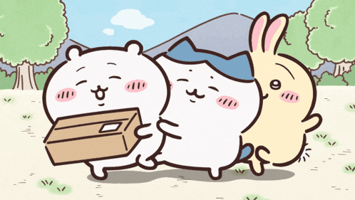

Future Sea จำลองอนาคตของมหาสมุทร เพื่อให้ผู้เล่นเห็นผลกระทบของ Climate Change และกิจกรรมของมนุษย์ต่อระบบนิเวศทางทะเล อยู่ใต้ทะเล มี 4 ปุ่ม ปุ่มมลพิษ ปุ่มอุณหภูมิ ปุ่มขยะ ปุ่มการอนุรักษ์ เมื่อผู้เล่นปรับค่า ระบบจะเปลี่ยนสภาพแวดล้อมของทะเลแบบ realtime เช่น สีของน้ำทะเล จำนวนปลา ขยะในทะเล ถ้ากดปุ่ม การอนุรักษ์ สภาพจะเปลี่ยนค่อยๆกลับมาฟื้นตัวขึ้น